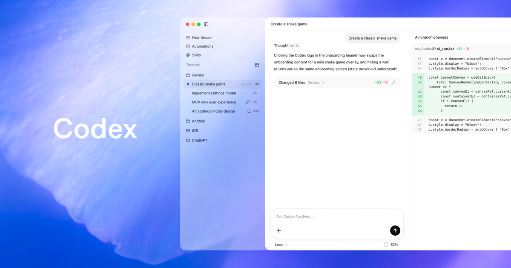
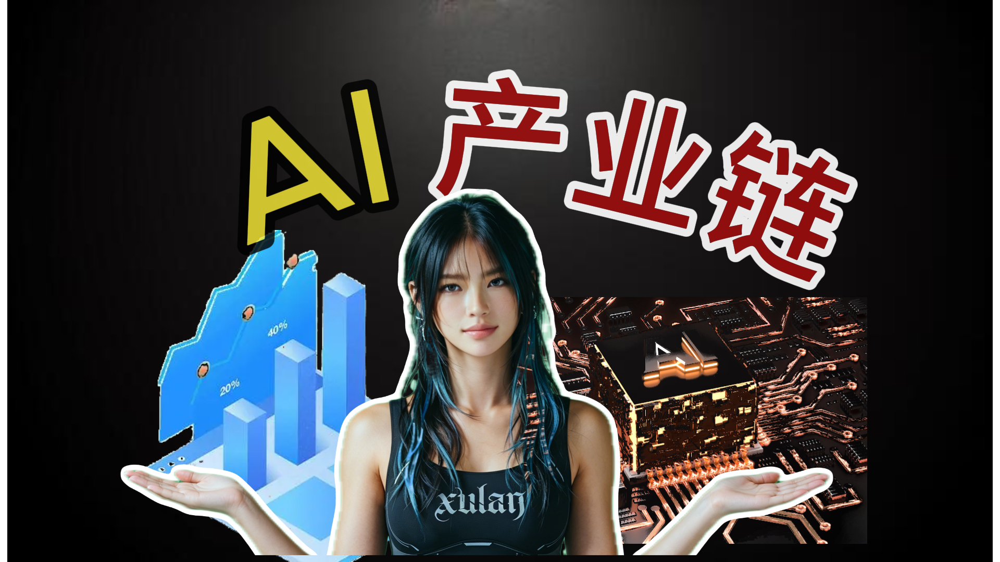
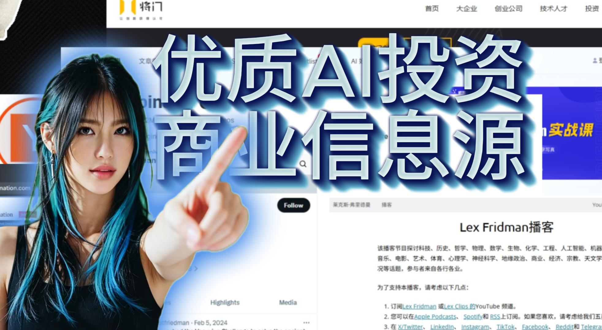
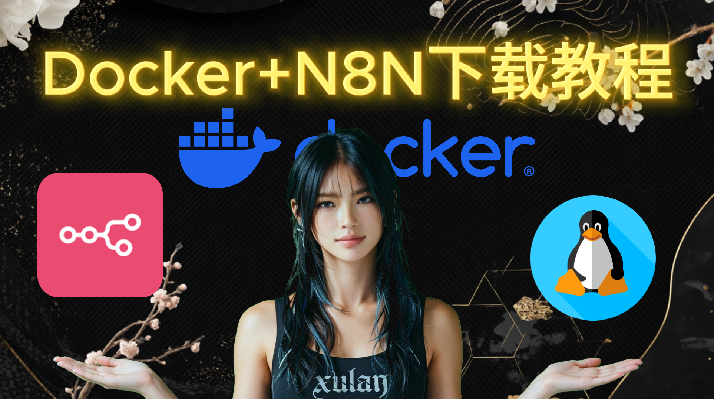

Workflow
8 min
AI 多模型多 Agent 到底怎么运作
借官方资料把 Codex、Claude Code 和普通人的真实工作接起来，讲清楚多 agent 什么时候值得上，怎么拆，怎么审。
打开文章Blog Library
这里收录的是你已经实际写出来、也能被别人直接进入的内容。不是产品占位说明，也不是后台备注，而是一组真正和工作流、表达、判断力有关的前台页面。
Business
做一个 AI 网站客服 从资料到上线的完整链路。Mindset
先保住自己的节奏 学工具之前先稳住身体、时间和判断。
借官方资料把 Codex、Claude Code 和普通人的真实工作接起来，讲清楚多 agent 什么时候值得上，怎么拆，怎么审。
打开文章

